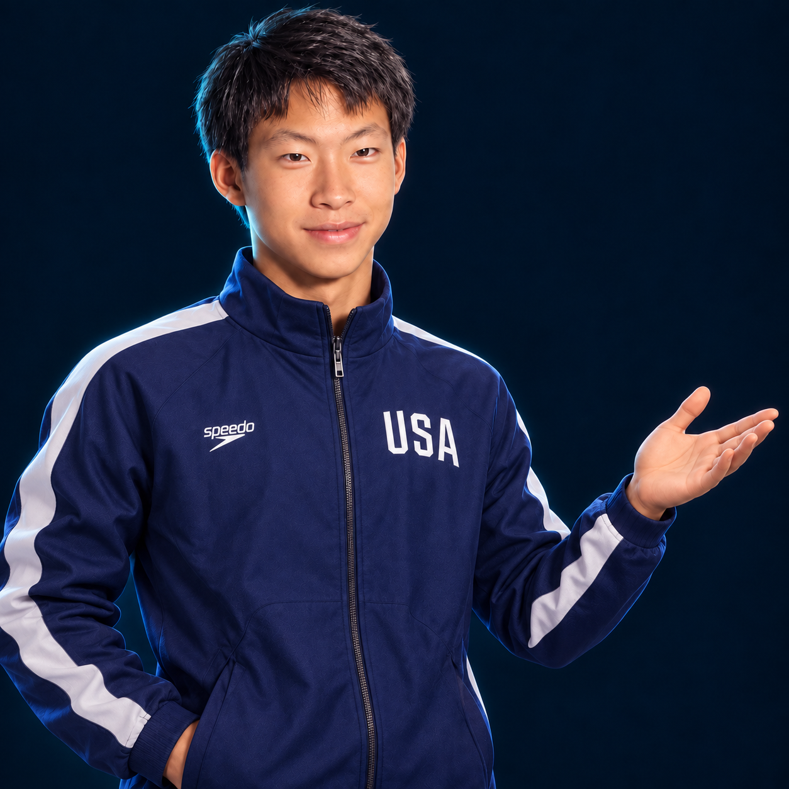
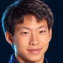

Stronger figures. Start here.
Your personal figure coach,
at your fingertips.
Technique feedback and focused drills from your practice videos. Anytime—without waiting for a coaching session.
Your video stays in your browser.

Finding the swimmer
Checkpoint 1 of 5
Back Layout
Trunk vs surface 4.8°
Small deviation
Start with your clip. Recorded demo · reviewed body points.STEP 1 / 4
Choose your figure.
Start with your group, then choose the figure you want to review.
Start a review
Step 1 of 4Follows your team's figure sheet.
Figure description
Position sequence and each one's share of the score
Technical requirements
STEP 2 / 4
Add your practice video.
A steady side view makes each checkpoint easier to review.
Upload the clip
stays on this deviceNo video yet.
See the rest of the review on Xavier's Ballet Leg: checkpoints found for you, the comparison and practice drills.
This switches your figure to 101 · Ballet Leg.
STEP 3 / 4
Review your checkpoints.
Find each position, check the landmarks, and save.
Figure
Let FigureSense find the frames
optionalFigureSense looks through the video with on-device pose detection and suggests each checkpoint. Then refine each frame and its dots below. Use a steady, side-on recording.
Find the frame
0.00 sKeyboard: ← → one frame (Shift 0.5 s) · Space play/pause · C capture
Inspect & fine-tune
Select a point, then click on the frame.
Drag a dot to move it. Arrow keys nudge the selected dot (Shift for 5 px). Delete removes it.
Coach's eye
STEP 4 / 4
Find your next focus.
Turn your observations into a plan for practice.
Save at least one scored checkpoint to see results.
Keep these results
stays on this deviceHow these numbers are built, and why they aren't a judge's score
- Angles are measured against the water line you mark, so a tilted camera doesn't change them. They are 2D estimates from one camera angle.
- Each requirement loses 0.2, 0.5 or 1.0 points when it is off by up to 15°, up to 30°, or more. Within 1.2° counts as on target. These limits are practice estimates.
- Each coach's-eye item not met loses 0.2. Where points allow, the app estimates the listed condition; otherwise you tick it by eye. Comparisons between saved frames do not assess the motion between them. These measurements depend on point placement and camera perspective.
- The figure score weights the scored checkpoints (Ballet Leg uses the manual's values, 10.5, 11, 11 and 10.5 out of 43; Barracuda and Kip use practice estimates) and multiplies by the figure's degree of difficulty. The starting Back Layout is a reference and isn't scored.
- Body-point suggestions come from MediaPipe Pose by Google (open source, Apache 2.0). Drill videos belong to their channels.
- Practise drills with a coach or lifeguard present, and never practise breath-holding alone.
YOUR PROGRESS
Your progress.
Compare saved reviews for the same swimmer and figure.
Saved reviews
this browser onlySaved reviews stay in this browser on this device only. Saved progress contains your name, scores and feedback, not videos or frames. Download the report image to keep the frames. Clearing browser site data removes saved progress. Score changes compare the same swimmer and saved checkpoints.
No saved reviews yet. Use "Save to my progress" under Results.